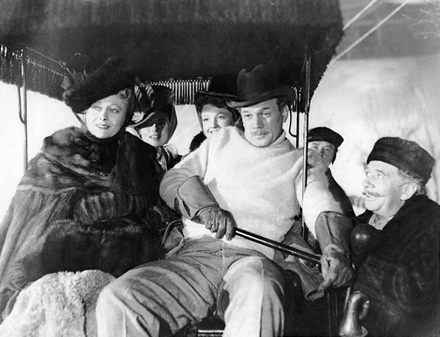

Joseph Cheshire Cotten Jr. (May 15, 1905 – February 6, 1994) was an American film, stage, radio and television actor. Cotten achieved prominence on Broadway, starring in the original stage productions of The Philadelphia Story and Sabrina Fair.
He first gained worldwide fame in three Orson Welles films: Citizen Kane (1941), The Magnificent Ambersons (1942), and Journey into Fear (1943), for which Cotten was also credited with the screenplay. He went on to become one of the leading Hollywood actors of the 1940s, appearing in films such as Shadow of a Doubt (1943), Love Letters (1945), Duel in the Sun (1946), Portrait of Jennie (1948), The Third Man (1949) and Niagara (1953). One of his final films was Michael Cimino's Heaven's Gate (1980).
In 1934, Cotten met and became friends with Orson Welles, a fellow cast member on CBS Radio's The American School of the Air. Welles regarded Cotten as a brilliant comic actor, and gave him the starring role in his Federal Theatre Project farce, Horse Eats Hat (September 26 – December 5, 1936). Cotten was sure that Horse Eats Hat won him the notice of his future Broadway co-star, Katharine Hepburn.
Cotten said Welles later told him "You're very lucky to be tall and thin and have curly hair. You can also move about the stage without running into the furniture. But these are fringe assets, and I'm afraid you'll never make it as an actor. But as a star, I think you well might hit the jackpot."
In 1937, Cotten became an inaugural member of Welles's Mercury Theatre company, starring in its Broadway productions Caesar as Publius; it ran for 157 performances.

He followed it with The Shoemaker's Holiday (1938) and Danton's Death (1938) for Welles. Cotten also performed in radio dramas presented on The Mercury Theatre on the Air and The Campbell Playhouse.
Cotten made his film debut in the Welles-directed short, Too Much Johnson, a comedy that was intended to complement the aborted 1938 Mercury stage production of William Gillette's 1890 play. The film was never screened in public and was lost until 2013.